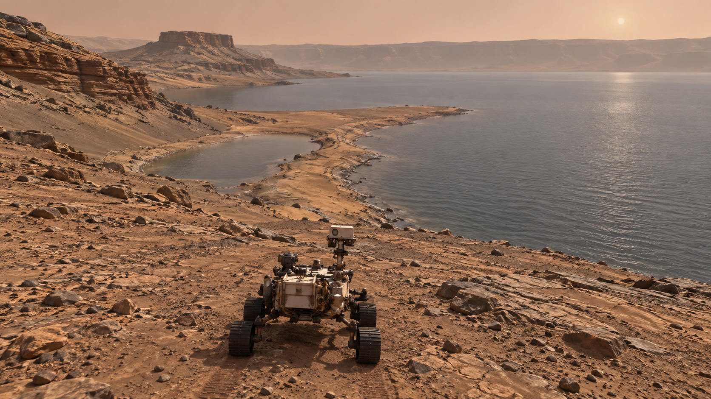
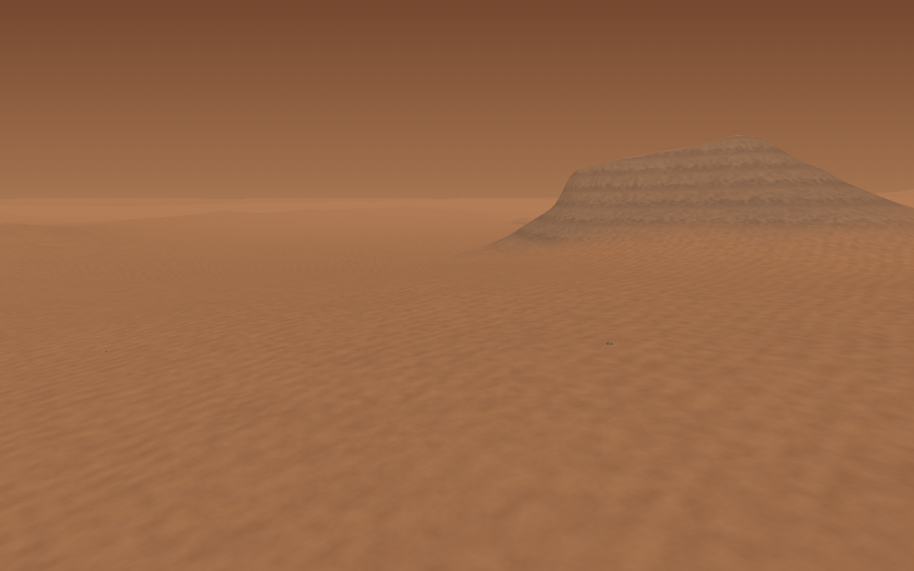
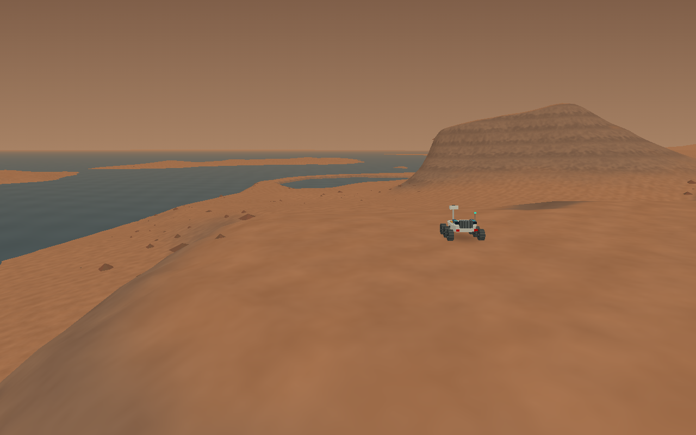
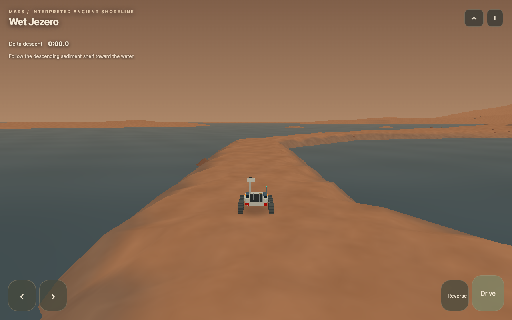
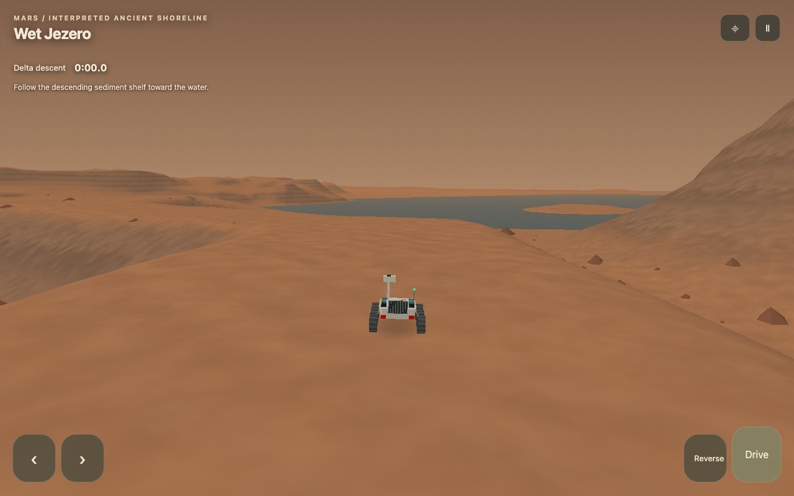

Wet Jezero — approved lake and delta direction
October 7, 2026. Q2 settled from prior producer direction, confirmed October 7. The compact landscape circuit is now constructed; water-driving physics remains out of scope.
Approved direction — vista before route
Create a compelling visual transformation: the player must immediately recognize Jezero with a major standing body of water. Use an exposed delta margin with a broad visible lake, not a generic river/channel. Design the vista and environmental payoff before optimizing the route. Keep recognizable landforms and compare the modern and wet views from the same camera.
A rover-only first prototype is acceptable, using existing steering, braking, boosts and pause/camera. Its creative identity is not “another rover sprint.” Movement should support the lake reveal, not subordinate it to route efficiency. Keep the modern compact relay and longer expedition with their existing records. Do not add airlift, boats, new vehicle systems or water physics unless later playtesting identifies a specific need. Water may remain a clear route boundary; shallow-water driving physics is not part of this first implementation.
What the evidence supports
Perseverance images show delta deposits and a history that includes high-energy floods capable of moving large boulders. The observations support an ancient river–lake system, with changes through time rather than one permanent water level. Mangold et al., Science (2021) is the primary research; NASA's accompanying explanation describes the stratigraphy and flood evidence.
Later rover work distinguishes multiple geological stages, including igneous crater-floor rocks, subsequent sediment deposition and changing water conditions. That history does not supply an exact ancient coastline for every modern landform. NASA's 2023 mission report summarizes those findings.
The current game's measured modern terrain is a useful starting shape, not a recovered lake-era landscape. Erosion, deposition and changing lake levels prevent “add one water plane” from becoming an exact reconstruction. Preserve recognizable terrain proportions and show a concise label: “An interpreted ancient Jezero shoreline, based on evidence of its former lake.” Avoid claims of a known exact year, inhabited Mars or an Earthlike breathable atmosphere. Ancient atmospheric density and precise water conditions remain uncertain; handling choices must be identified as game design.
Constructed circuit — October 7 producer update
Play → Mars → Jezero Special → Wet Jezero · lake circuit. The separate direct launch uses wet-jezero-v1; it does not depend on a calendar date.
| Passage | What the player sees and decides |
|---|
| Elevated delta reveal | Standing water is visible immediately beside Kodiak. Follow the descending pale sediment shelf; brake for the approach to the margin. |
| Shoreline | The lake fills the side of the view at rover height. Rocks and sediment banks frame the turn into the inlet. |
| Exposed delta bar / broad shore | The shorter bar curves through water on both sides. Its narrower margin rewards controlled steering. The longer, wider shore runs around the inlet and rejoins the same southern terrace. |
| Terrace climb | Rounded crests, bends and changing grade reward saving boost for a clean exit. Small terrain launches are possible; the broad line can stay grounded. |
| High overlook and return | Gain elevation beside the delta, look back across the lake, then reconnect with the opening shelf. |
There are six invisible, broad, ordered passage checks. They confirm the lap without Relay arches, bright navigation lines, helicopter prompts or unrelated activities. Short stage hints supplement the sediment shelves. No pickups or sampling checklist were added: the landscape is the purpose of the drive.
Topographic interpretation and scale
The existing measured delta/Kodiak/crater context remains the base. A compact 3,000-by-3,000 game-unit patch authors local shelves, the exposed bar, a broad shore alternative and climb crests. This is a rendering/contact patch, not a new expanded world. Outside it, existing topography remains unchanged. Inside it, terrain away from the course keeps the original sampled shape. Kodiak's summit and broad delta relationship are retained; nearby slopes and sediment remnants are interpreted for play. The water extends far beyond the compact circuit.
The chosen water elevation (85 internal rendering units) is a game composition choice, not a scientific lake-level measurement. Local heights differ by tens of metres at most; there is no invented giant mountain or exact ancient coastline. Muted gray-green water, restrained ripples and dusty reflections preserve the Martian palette. The production concept is richer than the existing low-poly renderer; the build carries over its water/land composition and subdued palette, not its photographic detail. No speculative atmospheric simulation is added.
Controls, boundaries and records
Reuse the existing rover handling, gravity, braking, reversing and finite boost bursts. Pause and free camera freeze the clock. Overhead drawing remains available with its existing slow driving/hop, and makes the lap practice. This prevents a changed movement mode from competing with ordinary circuit driving.
Water is a boundary even while airborne. An invalid crossing returns to the last safe shelf position, points along that shelf, releases held controls, adds five seconds, and permanently marks the lap practice. Press Drive again to continue. Practice never replaces the clean best. There is no manual recovery button or water-driving system. Restart immediately starts a new clean circuit.
The run, best and settings use only astra.jezero.wet-jezero-v1.*. Modern loops, relay, expedition and historical saves are not rewritten. Interrupted wet runs resume paused. A completed clean best also appears in the existing record list.
Production reference and actual comparison

Actual captures below use identical camera position, lens and heading. They are production references, not a claim that the ancient shoreline is recovered.




Validation and producer review
The automated driver completes both physical lines without water returns; its roughly one-minute runs at a deliberately conservative speed establish feasibility, not human pacing or replay appeal. Tests cover ordered progression, finish direction, discontinuous movement, water/practice consequences, save validation and separate launch identity. Browser checks cover Chromium/WebKit, phone controls, pause/camera, interrupted restore and historical-key preservation.
P19 is opportunistic QA, not a new approval gate. First run: learn and complete using the broad shore. Second run: retry using the exposed bar and a chosen boost. Report whether the opening immediately reads as a major lake, where route continuity is unclear, whether water returns are fair, whether the climb/overlook feels different, and whether the alternate line makes you want another lap. Automated tests cannot settle those questions. Q2 remains approved.
Q2 — settled producer direction
Q2a: rover-only prototype acceptable; visual transformation and environmental payoff define the activity, not another sprint. Q2b: exposed delta margin + broad visible lake approved over generic river/channel. Q2c: clear water boundary approved for the first build; no shallow-water driving physics yet. Additional transport or water systems require a specific need shown by later playtesting.
Recorded October 7 as confirmation of prior direction. The later producer direction specifies this compressed landscape circuit; it supersedes the earlier optional sprint-like route examples without reopening Q2.